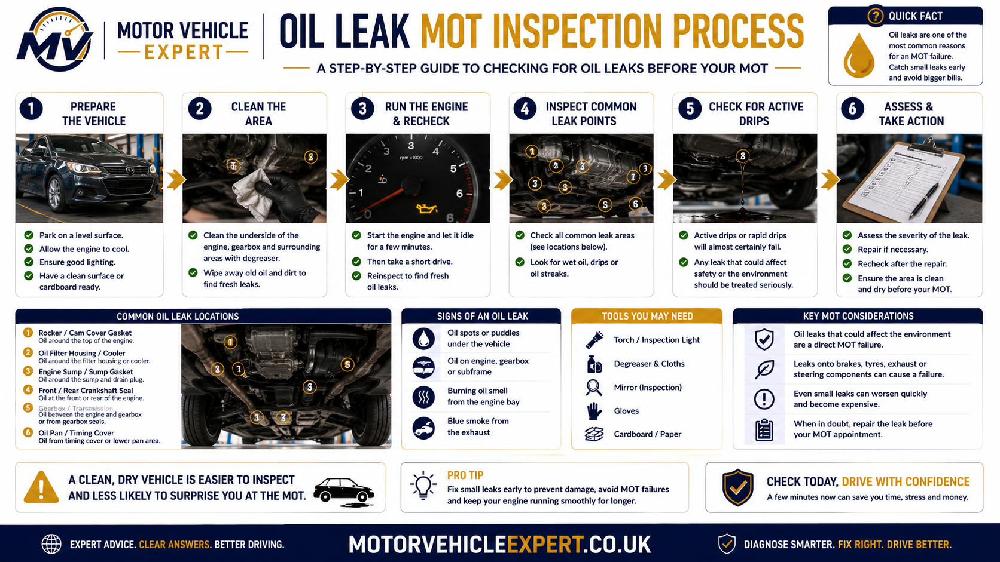
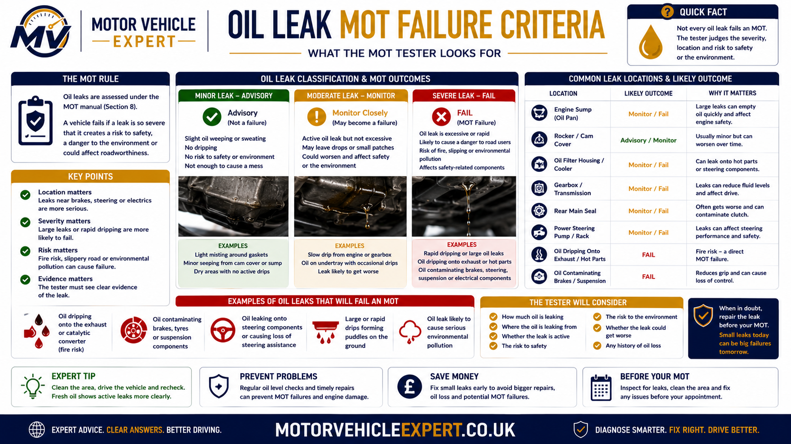
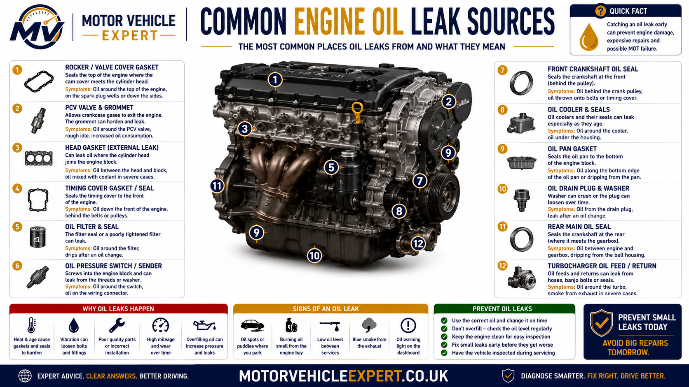
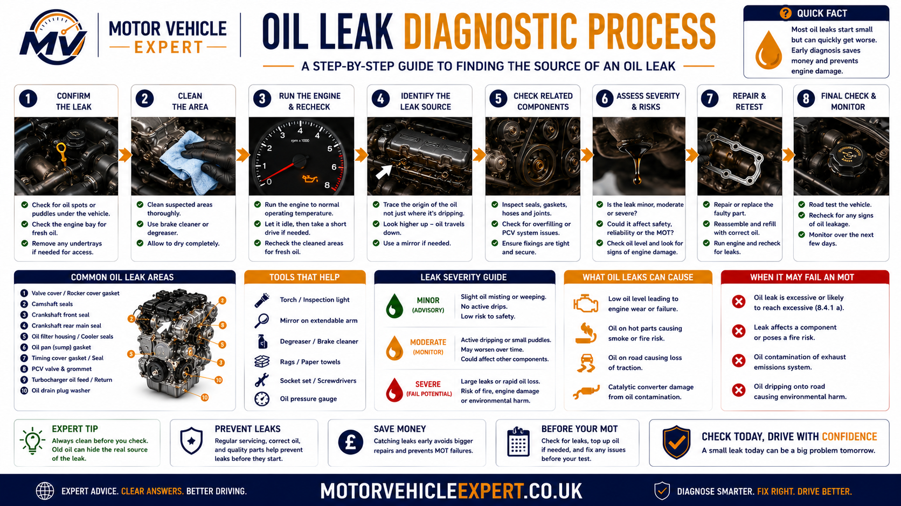
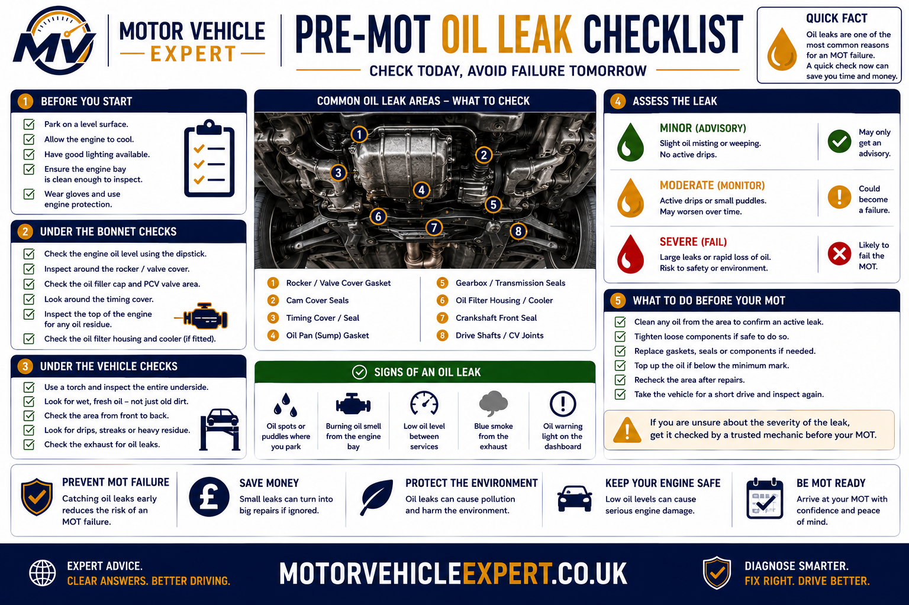

Can an Oil Leak Fail an MOT?
Yes—but not every oil leak results in an MOT failure. MOT testers assess both the severity of the leak and whether it creates a safety or environmental risk. Minor oil seepage around an engine or gearbox is often acceptable, whereas excessive oil leakage that is actively dripping, contaminates braking components or poses a danger to other road users can result in an MOT failure.
An MOT is not designed to diagnose the exact source of an oil leak. Instead, the tester determines whether the leakage has become excessive or creates a risk to safety or the environment. Even a vehicle that passes with a minor seep should still be repaired to prevent the leak becoming worse.
How MOT Testers Assess Engine Oil Leaks
During the MOT, the tester performs a visual inspection underneath the vehicle and around the engine bay. They are not dismantling components or diagnosing the cause of the leak—they simply assess its condition at the time of the inspection.
Visible Leakage
The tester looks for fresh engine oil escaping from the engine, gearbox or associated components.
Severity
Minor staining is treated differently from active dripping or excessive oil contamination.
Safety Risk
Oil reaching braking components, tyres or the road surface significantly increases the likelihood of failure.

Cleaning a heavily contaminated engine immediately before an MOT may improve visibility but will not repair the underlying fault. If oil continues leaking during the inspection, the tester will assess the vehicle based on its condition at that time.
Minor Oil Seepage vs Excessive Oil Leakage
Many vehicles develop slight oil sweating as seals age. This does not automatically mean the vehicle will fail. The important distinction is whether the oil is simply staining the component or actively escaping in sufficient quantities to create a safety concern.
| Condition | Typical MOT Outcome | Recommended Action |
|---|---|---|
| Light oil staining | Normally Pass | Monitor during servicing. |
| Minor dampness around seals | Usually Pass or Advisory | Repair before leakage worsens. |
| Fresh oil running down engine | Further Assessment | Diagnose and repair promptly. |
| Heavy dripping or oil contaminating components | Likely MOT Failure | Repair before presenting for MOT. |
Minor Seepage
- ✓ Light oil mist.
- ✓ Slight dampness around seals.
- ✓ No active dripping.
- ✓ No contamination of safety components.
Excessive Leakage
- ✗ Active oil dripping.
- ✗ Oil reaching brakes or tyres.
- ✗ Heavy contamination underneath vehicle.
- ✗ Potential danger to other road users.
When Can an Oil Leak Fail an MOT?
The presence of engine oil does not automatically determine the MOT result. The tester considers how much oil is escaping, whether the leak is active and where the oil is travelling. A small damp area around a gasket is very different from oil dripping onto the road, brakes, tyres or hot exhaust components.
An oil leak becomes significantly more serious when it creates an immediate safety risk, causes substantial fluid loss or could endanger other road users. The tester records the condition that is visible during the inspection rather than attempting to dismantle the engine and diagnose the exact failed seal or gasket.

Oil Is Dripping From the Vehicle
Fresh oil forming droplets or repeatedly falling from the engine, gearbox or underbody is more serious than light dampness or historic staining.
Oil May Reach the Road Surface
Escaping oil can reduce grip for motorcycles, cyclists and other vehicles. A leak capable of contaminating the road should be treated as urgent.
Oil Is Contaminating Brakes
Oil on brake discs, pads, drums or shoes can severely reduce braking performance. The braking defect itself can result in an MOT failure even when the original leak is elsewhere.
Oil Is Reaching a Tyre
Oil contamination may affect tyre grip and can damage some rubber materials. A leak near a wheel, hub or driveshaft area requires immediate investigation.
Oil Is Dripping Onto the Exhaust
Oil contacting a hot exhaust manifold, turbocharger or exhaust pipe may produce smoke, a burning smell and an increased fire risk.
The Engine Is Losing Oil Rapidly
A leak that causes a noticeable fall in the dipstick level can lead to low oil pressure, internal engine damage or sudden engine failure.
Oil reaching a braking surface or tyre is not simply an engine-leak problem. It can directly affect the driver's ability to stop or control the vehicle. Do not continue driving until the source has been located, the leak repaired and the contaminated components inspected.
An undertray may collect leaking oil and hide drops from the driveway, but it does not remove the fault. Oil may remain trapped until the tray becomes saturated, after which it can escape while the vehicle is being driven or inspected. A heavily oil-soaked undertray should prompt further investigation.
Oil Leak MOT and Safety Risk Dashboard
Oil leaks should be judged by evidence rather than by the size of the stain alone. Use the condition of the leak, the rate of oil loss and the components affected to decide how urgently the vehicle needs attention.
Monitor and Arrange Inspection
- Light oil misting only.
- No drops underneath the vehicle.
- Oil level remains stable.
- No smoke or burning smell.
- No brakes, tyres or belts contaminated.
Book Diagnosis Before the MOT
- Fresh oil is visible around a gasket.
- Small drops appear after parking.
- The leak is gradually becoming worse.
- The oil level needs occasional topping up.
- Oil is spreading across the underbody.
Stop and Investigate Immediately
- Oil is actively dripping.
- The oil warning light has appeared.
- Oil is reaching brakes or tyres.
- Smoke is rising from the engine bay.
- The dipstick level is falling rapidly.
A minor leak recorded on an earlier MOT may become more severe before the next test. Repeated oil-leak advisories should not be treated as permanent permission to ignore the fault. Compare the wording and dates in the MOT history and inspect whether the leak is spreading or becoming more active.
Common Engine Oil Leak Sources
Oil often travels away from its original source before it becomes visible underneath the vehicle. Airflow, gravity and moving components can spread the oil across the engine, gearbox, subframe and undertray, which is why the highest wet point is often more useful than the lowest drip.

Rocker Cover Gasket
A hardened or damaged rocker cover gasket can allow oil to run down the cylinder head and engine block. The leak may create a burning smell if oil reaches the exhaust manifold.
Oil Filter or Filter Housing
A loose filter, damaged seal or cracked housing can produce anything from slight seepage to rapid oil loss. Recent servicing should be checked if the leak appeared suddenly.
Oil Sump or Sump Gasket
Corrosion, impact damage, failed sealant or a distorted sump can allow oil to collect around the bottom of the engine and drip onto the undertray or road.
Sump Drain Plug
A damaged washer, stripped thread or incorrectly tightened drain plug may leak after an oil change. This fault can become serious if the plug loosens further.
Timing Cover or Front Crank Seal
Oil around the crankshaft pulley or timing cover can spread widely while the engine is running. Contamination of an auxiliary or timing belt can cause additional damage.
Rear Main Oil Seal
A rear crankshaft seal leak normally appears between the engine and gearbox. Repair can be labour-intensive because gearbox removal is often required.
Turbo Oil Feed or Return Pipe
Turbocharger oil pipes and their sealing washers operate near very hot components. Leakage can create smoke, burning smells and a potential fire hazard.
Oil Cooler or Oil Cooler Housing
Failed seals around an oil cooler or housing can leak externally. Some faults may also allow engine oil and coolant to mix internally, requiring urgent diagnosis.
Oil Pressure Switch or Sensor
A cracked switch body or failed seal can spray oil while the engine is running. The source may be difficult to identify once oil has spread across nearby components.
The lowest visible drop is not always the source of the leak. Clean the affected area and trace the oil upwards. A rocker cover leak, for example, may run down the engine and appear to come from the sump or gearbox.
How an Engine Oil Leak Should Be Diagnosed
Replacing the lowest wet gasket without confirming the original source can waste money and leave the fault unresolved. A proper diagnosis starts by checking the oil level, cleaning the contaminated area and observing where fresh oil first appears.

Check the Oil Level
Confirm the dipstick level before running the engine. If the level is below minimum or the oil-pressure warning light is illuminated, do not continue running the engine until the cause is understood.
Inspect the Vehicle Cold
Look around the rocker cover, oil filter housing, sump, drain plug, timing cover and the joint between the engine and gearbox.
Clean Existing Residue
Old contamination can hide the source. The affected area should be cleaned safely so that new leakage can be distinguished from historic oil deposits.
Run the Engine and Observe
With the vehicle safely positioned, inspect for fresh oil while the engine is idling and again after it reaches operating temperature. Some leaks only appear when oil pressure rises.
Trace the Highest Fresh Point
Follow the oil upwards and against its direction of travel. Airflow may push leaking oil rearwards, while gravity normally carries it downwards.
Confirm the Repair
After replacing the failed seal, gasket or component, clean the area again, run the engine, complete a road test where appropriate and check that no fresh oil has returned.
When several areas are heavily contaminated or the leak only appears while driving, a garage may add a compatible ultraviolet tracing dye to the engine oil. After the engine has been operated, the technician uses a UV lamp to help identify the fresh leak path.
Repeatedly adding oil may prevent the level from falling temporarily, but it does not control where the oil is escaping. The leak can continue contaminating the road, exhaust, brakes or underbody even when the dipstick appears correctly filled.
Can You Drive With an Engine Oil Leak?
That depends entirely on the severity of the leak. A very minor oil seep around a gasket may allow the vehicle to remain safe for a short period while repairs are arranged. However, an active oil leak should never be ignored because engine oil is essential for lubrication, cooling and preventing internal engine wear.
Minor Seepage
Light dampness with no noticeable drop in oil level should still be monitored and repaired before it develops into a larger leak.
Visible Oil Drops
Fresh oil on the driveway or undertray indicates the leak is becoming more active and should be diagnosed before long journeys.
Heavy Leakage
If the oil warning light appears, smoke develops or oil reaches the brakes, tyres or exhaust, stop driving and repair the fault immediately.
The oil pressure warning light indicates that the engine may no longer be receiving sufficient lubrication. Continuing to drive could cause catastrophic engine damage costing thousands of pounds to repair or replace.
Typical UK Oil Leak Repair Costs
Repair costs vary considerably depending on the location of the leak, the amount of dismantling required and the vehicle involved. Replacing a rocker cover gasket is generally inexpensive, whereas repairing a rear crankshaft oil seal often involves removing the gearbox.
Rocker Cover Gasket
£90–£220Oil Filter Housing
£120–£350Oil Sump Reseal
£180–£450Timing Cover Leak
£250–£700Turbo Oil Pipes
£250–£800Rear Main Oil Seal
£700–£1,600+Repair Immediately or Continue Monitoring?
Not every oil leak requires emergency repairs, but delaying repairs for an active leak almost always increases the eventual repair bill. Use the guide below to help decide the most appropriate course of action.
| Condition | Recommendation | Priority |
|---|---|---|
| Light oil mist only | Monitor and inspect during servicing. | Low |
| Small fresh leak | Book diagnosis before the next MOT. | Medium |
| Oil dripping underneath | Repair as soon as possible. | High |
| Oil reaching brakes or tyres | Stop driving until repaired. | Critical |
| Oil warning light illuminated | Switch off engine immediately. | Critical |
Should You Buy a Used Car With an Oil Leak?
An oil leak is not always a reason to reject a used car. Many older vehicles develop small gasket leaks over time. The important question is whether the leak is minor and inexpensive to repair or whether it indicates neglected maintenance or significant mechanical wear.
Good Signs
- ✓ Full service history.
- ✓ Minor seepage only.
- ✓ Stable oil level.
- ✓ No burning smell.
- ✓ Engine runs quietly.
- ✓ Previous repairs documented.
Walk Away If...
- ✗ Heavy oil underneath vehicle.
- ✗ Oil on brakes or tyres.
- ✗ Oil pressure warning light present.
- ✗ Smoke from engine bay.
- ✗ Seller recently cleaned engine to hide leaks.
- ✗ No maintenance history.
Always inspect the vehicle again after a test drive. Heat and oil pressure often make small leaks much easier to identify than when the engine is cold.
Pre-MOT Oil Leak Checklist
Spending ten minutes checking for fresh oil leaks before your MOT could prevent unnecessary advisories or failures. This simple inspection should form part of every pre-MOT routine.

Before the MOT
- ✓ Check engine oil level.
- ✓ Inspect underneath the vehicle.
- ✓ Look around the oil filter housing.
- ✓ Check rocker cover and sump.
- ✓ Remove heavy oil contamination.
- ✓ Investigate fresh oil drops.
- ✓ Repair active leaks before testing.
Remember
- ✓ Minor seepage does not automatically fail.
- ✓ Active dripping should never be ignored.
- ✓ Oil on brakes or tyres is dangerous.
- ✓ Don't rely on topping up the oil.
- ✓ Review previous MOT advisories.
- ✓ Fix leaks before they become expensive.
- ✓ A clean engine makes diagnosis easier.
Continue Your Oil Leak and MOT Research
An oil leak may connect with previous MOT advisories, low engine oil, warning lights, exhaust smoke, burning smells and poor maintenance history. Use the guides below to understand the wider condition of the vehicle before deciding whether to repair, drive or buy it.
Oil Leak Advisory Explained
Understand what an oil leak advisory means, how urgently it should be repaired and whether it may become an MOT failure at the next test.
Read GuideDoes an MOT Check Engine Oil?
Learn whether testers check oil level, oil quality, warning lights, leaks and other oil-related conditions during an MOT inspection.
Read GuideHow to Prepare for an MOT
Follow a complete pre-MOT inspection covering lights, tyres, brakes, fluids, warning lights, visibility and common reasons for failure.
Read GuideCommon MOT Failure Reasons
Review the most common UK MOT defects and identify problems that should be repaired before presenting the vehicle for testing.
Read GuideMost Common MOT Advisories
Learn how to interpret repeated MOT advisories involving oil leaks, corrosion, brakes, tyres, suspension and other developing defects.
Read GuideWhat Does an MOT Check?
Understand what is included in the UK MOT, what testers can inspect and which mechanical conditions fall outside the normal test.
Read GuideCar Fails MOT on Emissions
Learn how engine faults, burning oil, exhaust smoke and emissions problems can contribute to an MOT emissions failure.
Read GuideVehicle Diagnostics Guides
Explore diagnostic guides covering warning lights, fault codes, engine symptoms, testing procedures and repair decisions.
Explore DiagnosticsOne oil leak advisory may describe a minor developing problem. The same advisory repeated across several tests suggests the fault has been ignored. Compare the dates, mileage and wording to see whether the leak is becoming progressively worse.
Oil Leak MOT Questions Answered
These answers cover the most common questions UK motorists ask about engine oil leaks, MOT failure criteria, advisories, driving safety, diagnosis and repair.
Can an oil leak fail an MOT?
Yes. An oil leak can fail an MOT when it is excessive, actively dripping, likely to contaminate the road or affecting safety-related components. Minor dampness or light seepage does not automatically result in failure.
Does every engine oil leak fail an MOT?
No. Testers distinguish between light staining or minor seepage and an active, excessive leak. The amount escaping, the location of the leak and the risk it creates all affect the result.
Can a minor oil leak receive an MOT advisory?
Yes. A minor visible leak that does not meet the failure threshold may be recorded as an advisory. The advisory warns the owner that the condition should be monitored and repaired before it becomes worse.
What counts as an excessive oil leak during an MOT?
Excessive leakage generally means more than light misting or dampness. Fresh oil actively running, repeatedly forming drops or escaping in a way that could contaminate the road carries a much greater failure risk.
Will oil dripping from the engine fail an MOT?
Active dripping significantly increases the likelihood of failure, particularly when the leak is continuous, contaminates the underbody or may reach the road surface.
Can oil on the brakes fail an MOT?
Yes. Oil contamination can reduce friction between braking surfaces and seriously affect braking performance. The vehicle may fail because of the contaminated brakes as well as the underlying fluid leak.
Can oil on a tyre fail an MOT?
Oil reaching a tyre may reduce grip and damage rubber materials. It also indicates that a leak is affecting a safety-critical area, so the vehicle should be inspected and repaired immediately.
Can oil leaking onto the exhaust fail an MOT?
Oil on a hot exhaust can cause smoke, a burning smell and a potential fire risk. The MOT result depends on the visible condition and related defects, but the vehicle should be repaired before continued driving.
Does an oil-soaked engine undertray hide an MOT leak?
An undertray may temporarily collect leaking oil, but it does not repair or remove the fault. Once saturated, the tray can release oil while driving or during the inspection.
Will cleaning the engine before the MOT prevent failure?
Cleaning old contamination may help identify the source, but it will not prevent failure if fresh oil continues to escape during the test. Cleaning should support diagnosis rather than be used to conceal an active leak.
Can I drive to an MOT with an oil leak?
A very minor seep may not make the vehicle immediately unsafe, but an active leak should be assessed before driving. Do not drive when the oil warning light is illuminated, oil is reaching brakes or tyres, or smoke is coming from the engine bay.
Is it safe to drive with a small oil leak?
Light dampness with a stable oil level may allow limited use while an inspection is arranged. Continue checking the dipstick and stop using the vehicle if the leak grows, drops appear or the warning light comes on.
What should I do if the oil pressure warning light appears?
Stop the engine as soon as it is safe. The warning may indicate that the engine is not receiving adequate lubrication. Continuing to drive can cause severe internal engine damage.
What are the most common engine oil leak sources?
Common sources include the rocker cover gasket, oil filter housing, sump, drain plug, timing cover, crankshaft seals, oil cooler housing, turbo oil pipes and oil pressure switch.
Why does oil appear underneath the gearbox?
Oil near the engine and gearbox joint may come from a rear crankshaft seal, but oil can also travel down from a higher engine leak. The area should be cleaned and traced before parts are replaced.
How much does an engine oil leak cost to repair?
A simple gasket or seal repair may cost around £90–£350, while a timing cover, turbo oil pipe or rear main seal repair may cost several hundred pounds or more than £1,000 depending on access and labour time.
Should I repair a minor oil leak before an MOT?
Repairing it beforehand is the safest approach, particularly when the leak is fresh or becoming worse. A minor seep may pass, but it can still receive an advisory and may become a failure later.
Should I buy a used car with an oil leak?
A small confirmed gasket leak may be manageable when the vehicle has a strong service history and the repair cost is known. Avoid vehicles with heavy leakage, warning lights, smoke, contaminated brakes or no evidence of proper maintenance.
Can repeated oil leak advisories affect a used car purchase?
Yes. Repeated advisories suggest that the owner may have ignored the fault for several years. The leak may now be worse than the wording on the earliest MOT record suggests.
How should a garage diagnose an oil leak?
The garage should check the oil level, inspect the engine cold, clean existing contamination, run the engine, locate the highest fresh-oil point and confirm that no leakage returns after repair.
Do Not Judge an Oil Leak by the Stain Alone
A small damp patch does not automatically mean MOT failure, and a large stain does not always identify the original leak source. The important factors are whether fresh oil is escaping, how quickly the level is falling and whether the oil is reaching the road, brakes, tyres, belts or hot exhaust components.
Light seepage should be monitored and repaired before it develops. Active dripping requires prompt diagnosis. Oil affecting braking, tyre safety or engine lubrication requires immediate action and the vehicle should not be driven until it has been inspected.
Check the oil level, inspect underneath the vehicle after parking, review previous MOT advisories and arrange diagnosis for any fresh leakage. Repairing the source properly is safer and usually cheaper than waiting for the leak to damage other components.
About Our Oil Leak MOT Guide
This guide has been written for UK motorists who want to understand when an engine oil leak may affect an MOT result, how testers assess visible leakage and when a vehicle should be inspected before further driving.
Motor Vehicle Expert combines practical mechanical explanations with clear MOT, repair-cost and used-car-buying guidance. The aim is to help drivers recognise risk, ask better questions at the garage and make safer repair decisions.
UK-Focused
Written around the questions and decisions faced by UK drivers, vehicle owners and used car buyers.
Mechanic-Level Detail
Explains symptoms, likely causes, inspection methods and repair priorities without unnecessary technical language.
Independent Guidance
Designed to help readers understand the condition before approving work or purchasing a vehicle.
This guide provides general educational information and cannot replace a physical inspection. Oil leaks can spread away from their source and may require lifting equipment, cleaning or specialist diagnostic methods to identify correctly.